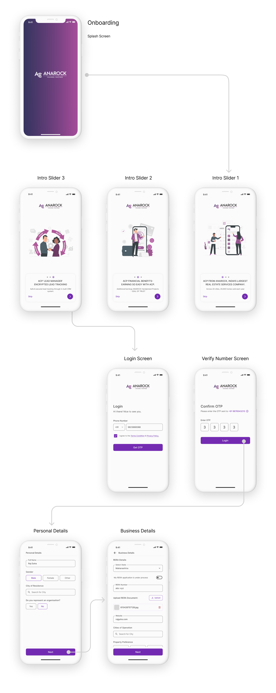
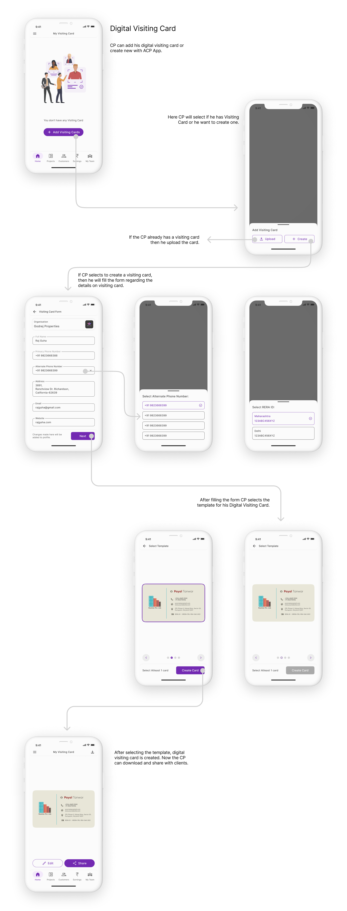
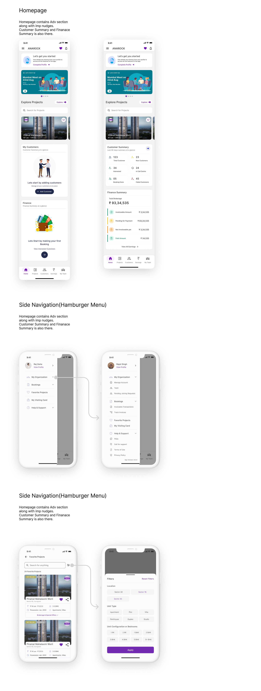
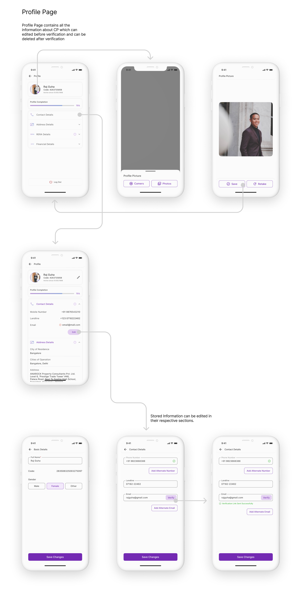

TARP Design System
TARP Component Library was designed as a part of startup to create aglie software in Permute Solutions Pvt. Ltd. Few components are shown below to demonstrate the UI perspective of TARP. Tarp uses the grid system to create complete pages design, so all the components are created accordingly.

Problem Statement
The current system for channel partners (CPs) to manage property listings, client interactions, and commissions faces usability challenges. Complex workflows, a cumbersome CRM interface, and confusing commission tracking reduce CP efficiency. Additionally, offers and the Seal of Trust, which are essential for boosting sales and client credibility, are not easily accessible. A UI/UX redesign is needed to simplify navigation, improve CRM and CM usability, and enhance the visibility of key features, empowering CPs to manage clients and close deals more effectively.
UX Researcher,
Duration
July/22 - Jan/23 (4 Months)
Flows and UI Designs
Module 1 - Channel Partner(CP)/Organisation Onboarding
First time user will onboard by using number and OTP following with the filling personal details and then continues by choosing between he owns an organisation or he is individual CP. CP also has to fll his organisation details like RERA details.
Module 2 - Digital Visiting Card
Digital Visiting Card is a CP's visiting card which he can share with the potential clients to let them know that he is with the organisation or he has official RERA ID. Here user can create the visiting card by filling all the necessary details and then choose of the templete to select his visiting card. User can also upload the existing visiting card by uploading it.
Module 3 - Project - Filters, Listing, Project Details
CPs can view the Project Listing to view projects toview project details and offers that comes along with projects which they can avail after selling the project. Users can also filter the projects according to their need and also sort the listing to view accordingly. In project details they can share the project details with the client for them to understand in & out of the project.


When the user opens the app he sees Homepage where he can see the nudges which gives him immediate actionables, advetisement section which will help marketing team to market new projects,app features, etc. , Then he gets summary of his customers at differnent stages in CRM,and then finally he sees all the finance summary. User can also view the favorite projects from the top bar of the app. USer also get the more options from side naviagtion.
Module 5 - Profile
Profile contains all the details about the CP which he can edit at any given time. CP can change Profile Pictue from here and verify his email.
Module 6 - My Team
My Team in bottom navigation will only be visible to organisation profile. It will contain all the team members. Team owner and admin can edit the details of team members.

Made with ❤️ by Sumit.